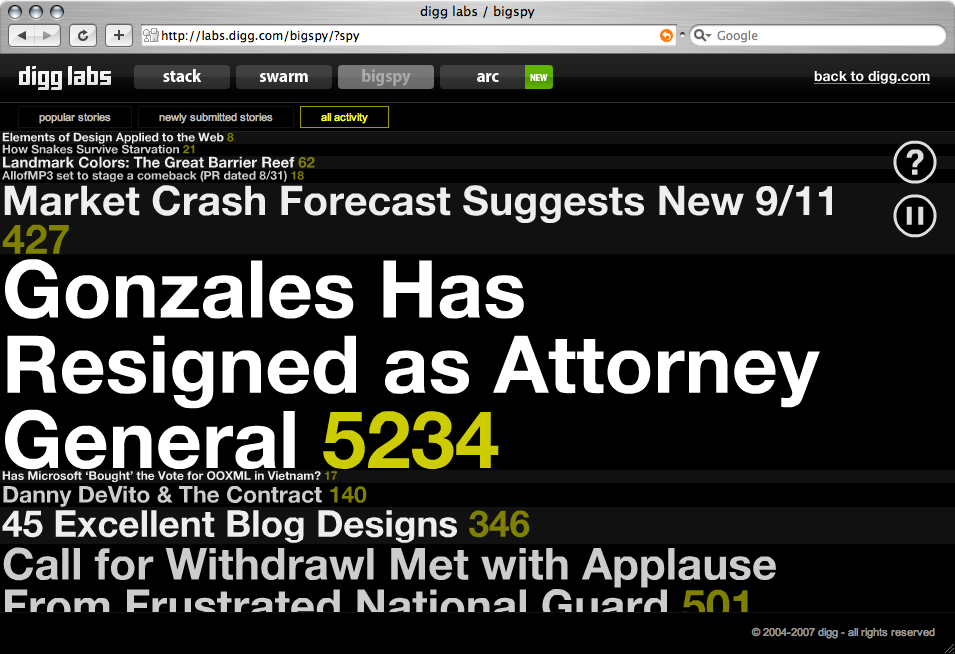
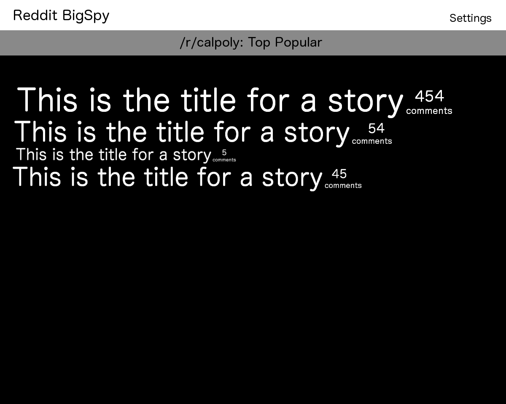
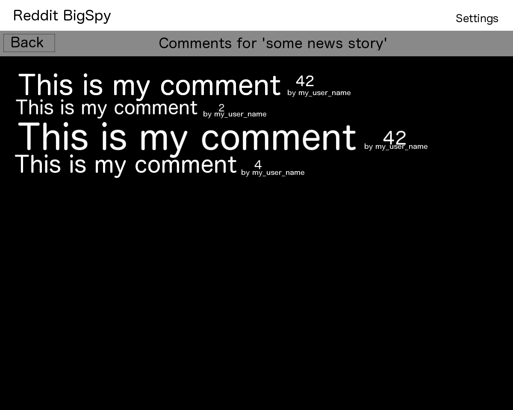
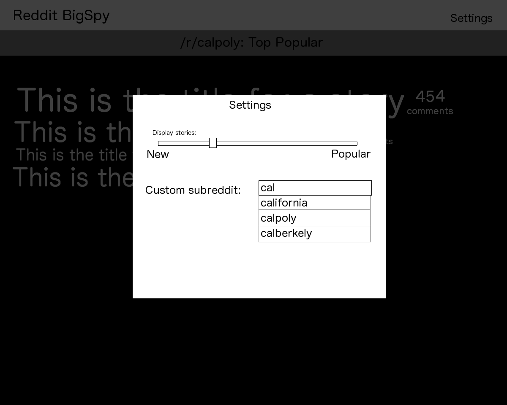

When the social media website Digg was at the height of its popularity years ago, it released a few tools for visualizing data from their website. Digg contracted out to stamen design to create these tools and were released under a new project called "Digg Labs". One of the tools they released was called BigSpy. It was a way for users view a "live feed" of new and popular stories submitted to the Digg. Stamen's article on the tool can be found here. You can see a screenshot and video of the product below:
One of the main features of Digg was it's ability for users to vote on articles. Articles that received a high number of votes were displayed with larger text in BigSpy. I'm not entirely sure (nor does the internet apparently) when Digg labs was shut down, but the project now ceases to exist. A popular open source social website called reddit follows a similar model to Digg where users vote on stories that surface to the front page. Additionally, reddit introduces the concept of a 'subreddit' which you can read about here (examples include /r/calpoly, /r/slo, /r/javascript, /r/jquery). This proposed project, Reddit BigSpy, would reimplement the BigSpy visualization but using reddit instead of Digg. Just like the original, users will be able to click on the links from the "feed" as they appear in the visualization. In addition, unlike the original, there will be a separate link to view a "feed" of comments in a similar vein as the "feed" of links (with new/popular comments appearing as they come in).
Reddit has a free, public API documented here. While the API provides methods for user authentication, they will not be necessary for the purposes of this project. The API will be used to retrieve Reddit stories/links while allowing the user to specify other parameters.
All of the API methods below will be used in Reddit BigSpy and do not require authentication:
NOTE: Please don't copy these mockups verbatim; they're intentionally ugly. As long as all the elements are there and the site has a flow similar to Digg BigSpy, you should be fine.
The overall layout/design of Reddit BigSpy will feel/look very similar to Digg BigSpy (though this mockup makes it appear much worse). The links will be sized according to their number of votes (shown on the right). In this mockup, we're looking at the top stories for the Cal Poly subreddit, though the default page for Reddit BigSpy will be displaying links from the reddit frontpage (all subreddits).
Each article link will contain a 'comments' link that will take them to a similar layout but displaying the comments for that article in a live "feed" layout similar to the article live "feed" layout. Each comment will have a vote count in addition to a link to the username of the commenter. There will also be a jQuery UI back button in the upper left to go back to the list of posts.
The settings button in the upper right will spawn a dialog that contains a couple elements. The first element (a slider) determines the balance of stories that should be displayed in the list of posts (new vs. popular). The second element is an input field that allows the user to specify a specific subreddit to display the posts for (as opposed the default, which is all subreddits). When the user starts typing, an autocomplete field will appear below suggesting subreddits.
